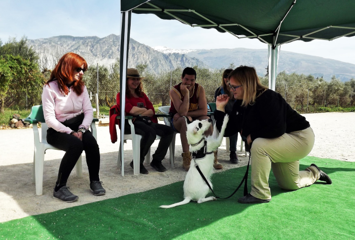
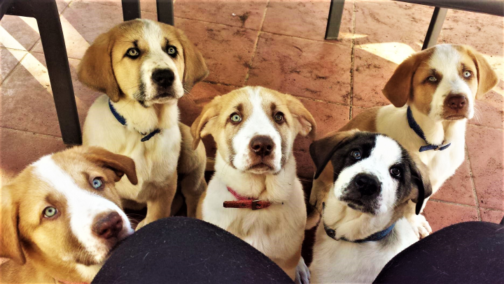
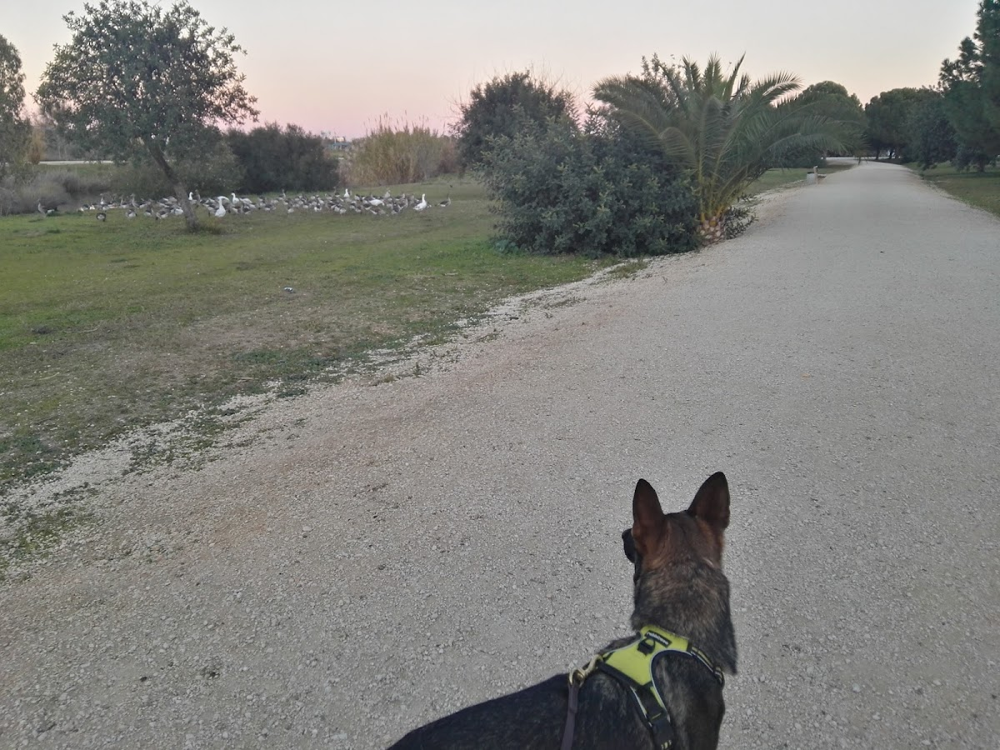
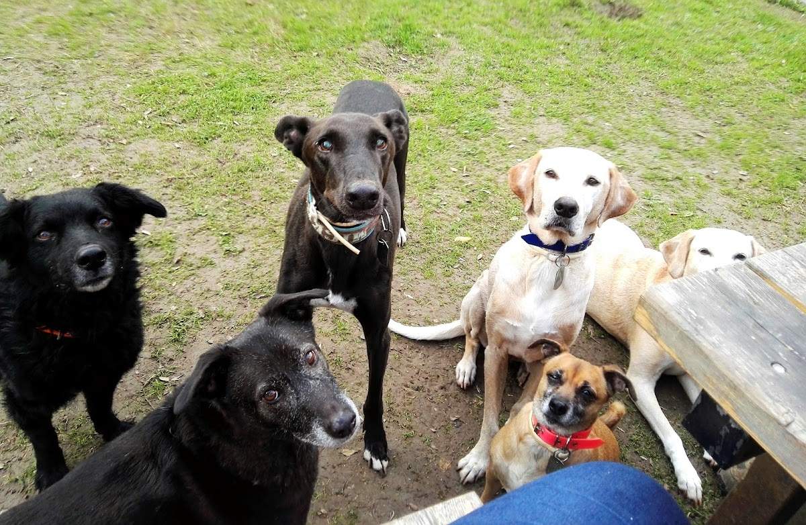

Alba Toja es educadora y modificadora de conducta canina en Sevilla. Trabaja el bienestar emocional de tu perro y te enseña a entenderlo mejor, tanto a ti como a él.
4,9★
Valoración Google
18
Reseñas verificadas
100%
Enfoque personalizado
A domicilio
Servicio en Sevilla
Educación canina basada en el bienestar emocional del perro y el aprendizaje del dueño. En Sevilla.

La etapa cachorro es clave. Alba trabaja la socialización, el control de mordida, los hábitos en casa y los comandos básicos desde el principio para evitar problemas futuros.

Miedos, ansiedad por separación, reactividad, estrés, ladridos excesivos. Alba analiza la causa real del problema y trabaja con tu perro de forma progresiva y sin métodos aversivos.

Antes de empezar cualquier programa, Alba realiza una valoración comportamental detallada a domicilio. Conoce al perro en su entorno real y diseña un plan adaptado a su caso.
No es solo adiestramiento. Es entender a tu perro y enseñarte a ti también.
Sin métodos aversivos ni coercitivos. Alba trabaja desde el bienestar emocional del animal: comprensión, confianza y refuerzo positivo.
Antes de empezar, hace una sesión de valoración comportamental a domicilio. Conoce al perro en su entorno y analiza la causa real del problema.
Va a tu casa, al parque, al entorno real donde ocurren los problemas. Así los resultados son más rápidos y duraderos porque el perro aprende donde importa.
"Tan importante es trabajar con ellos como con nosotros, sus compañeros de vida." Alba te da herramientas concretas para que el cambio sea real y permanente.
Siempre dispuesta y disponible para cualquier duda o consulta. Sus clientes lo destacan: el acompañamiento va más allá de las sesiones.
17 de sus 18 reseñas son de 5 estrellas. Sus clientes describen el trabajo con Alba como "un antes y un después" en la relación con sus perros.
4,9★ · 18 reseñas verificadas en Google Maps
Todo lo que necesitas saber antes de empezar.
Alba trabaja principalmente en Sevilla capital y localidades cercanas. La sesión de valoración es siempre a domicilio, en el entorno real del perro. Contacta directamente para confirmar tu zona.
La primera sesión es siempre una valoración comportamental a domicilio. Alba conoce a tu perro en su entorno, observa sus comportamientos y habla contigo sobre el problema. A partir de ahí diseña el plan de trabajo adecuado para cada caso.
Depende del caso concreto. Problemas leves pueden resolverse en pocas sesiones. Casos de ansiedad grave, miedos profundos o reactividad fuerte requieren más tiempo. Tras la valoración, Alba te indica el número de sesiones recomendadas y el proceso a seguir.
Sí. El curso de cachorros es uno de los servicios estrella de EllaAdiestra. La etapa temprana es clave para el desarrollo del perro: socialización, mordida, hábitos en casa, primeros comandos. Cuanto antes se empiece, mejor.
Sí. Alba siempre está disponible para consultas después de las sesiones. Sus clientes destacan especialmente este aspecto: el acompañamiento continúa más allá del tiempo de trabajo. No se trata solo de dar pautas, sino de asegurarse de que funcionan.
Cuéntanos qué pasa con tu perro. Alba te escuchará y te dará una valoración inicial sin compromiso.